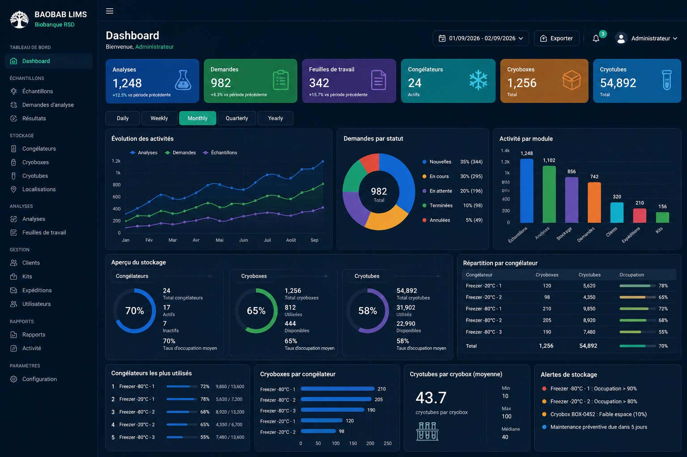

Génie Logiciel
Génie Logiciel
Bonjour !
Moi c'est
NDE
Jordan L.
Développeur Full-Stack
“
L'excellence technique et l'architecture logicielle de Jordan garantissent le succès de nos projets en production. Hautement recommandé !
★ ★ ★ ★ ★
5+ Ans
D'expérience & Conception

Pourquoi me choisir ?
Polyvalent et rigoureux, je mets mes compétences au service du développement applicatif, de la maintenance d'infrastructures et de la création graphique. Certifié par les Ateliers Google, je conçois des systèmes d'information pensés pour durer.
100%
Code en production vérifiable
Palme d'Or
3e Prix National Concours Tech
Mes Services
Technologue en Génie Logiciel certifié par les Ateliers Google : conception applicative robuste, bases de données relationnelles et créations graphiques.
Génie Logiciel & Applications Web

Conception d'architectures SaaS et ERP complètes, modélisation de microservices, APIs RESTful et synchronisation hors-ligne résiliente.
Mon Parcours & Expérience
U.P. SIANTOU, Yaoundé
2025 - 2026 BTS en Génie LogicielStagiaire Assistance Technique & Dev
Participation active à la conception et à la mise en œuvre du système intégré de gestion d’Université, avec validation de présence par système biométrique et gestion des étudiants.
IUT de Douala
2026 Licence Tech en GLConception Logicielle, Modélisation & IA
Spécialisation en modélisation logicielle avancée, bases de données relationnelles SQL, conteneurisation Docker et automatisation de processus complexes.
LeGuide Informatique & Polytech-Valor
2022 - 2023 Infographie & MultimédiaInfographiste, Vidéographe & Assistant DRH
Création de chartes graphiques, logos et affiches professionnelles. Production multimédia et montage vidéo pour LeGuide Informatique. Gestion des processus RH chez Polytech-Valor.
Univ. Yaoundé I & Lycée Ambam
2017 - 2023 Mathématiques & Bac CRigueur Mathématique & Débuts du Web
Deux années en Mathématiques fondamentales. Premier déploiement web dès 2017 avec la création du site web officiel du Lycée Bilingue d’AMBAM.
ERP agricole de pointe digitalisant la gestion des parcelles, le suivi financier des récoltes, les stocks et la traçabilité en temps réel, conçu pour les exploitants avec mode hors-ligne résilient.
UI Dashboard
 Capture Complète
Capture Complète
 Architecture SI
Architecture SI
Galerie de créations & réalisations réelles ✦
Survolez pour mettre en pause · Cliquez pour agrandir en plein écran





.jpeg)
✦
⌒
Ceux qui m'ont
fait confiance
Retours et appréciations d'enseignants-chercheurs, d'inspecteurs, de collaborateurs tech et de dirigeants ayant validé ma rigueur d'ingénierie.
Auto-scroll actif
Vous avez une idée de projet ?
Discutons-en ensemble
4.9/5 Note Moyenne Clients
Palme d'Or Concours National
Certifié Ateliers Google
Génie Logiciel ✦
Bases de Données SQL ✦
Infographie & Logos ✦
Petit Colis ✦
AgroFlow ERP ✦
Maintenance & Réseaux ✦
Systèmes Embarqués IoT ✦
Palme d'Or National ✦
Ateliers Google Certifié ✦
Bilingue FR / EN ✦